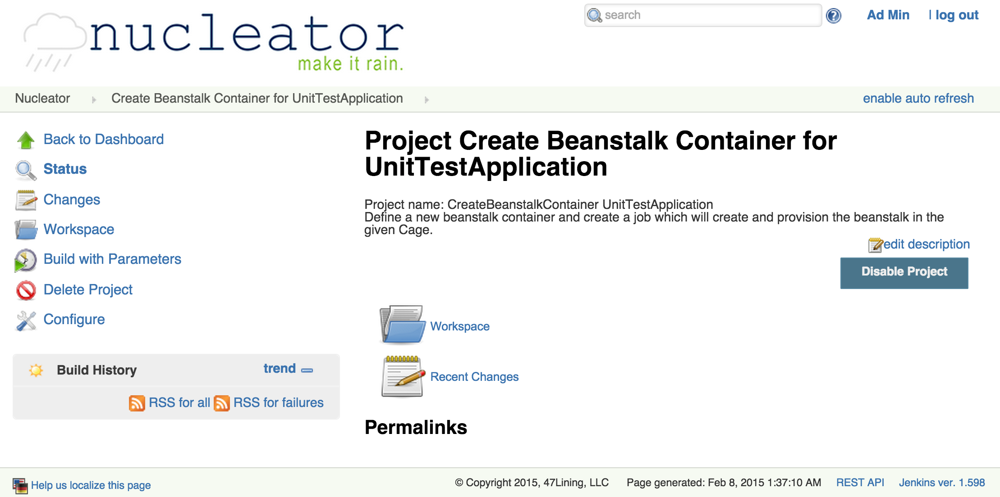
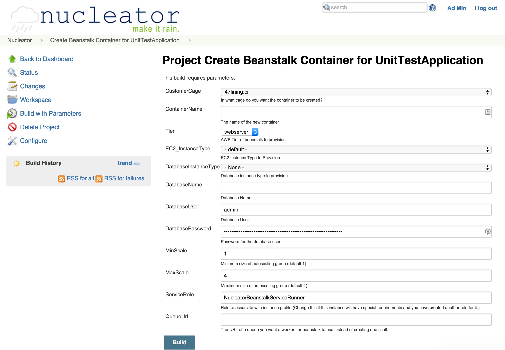

Create a Deployment Environment for an Application
The Nucleator User Interface enables you to create deployment environments and targets for your applications
The Nucleator User Interface project "Create Beanstalk Container for YourApplication" is generated for applications of the Beanstalk Stackset type. It provisions and configures a Beanstalk environment in a cage you select.

When you run that, it collects the list of known cages. You pick one, give it a name and specify a number of other parameters to build the project:

The other parameters are:
- Tier - if your application is customer-facing, use the "webserver" tier, if it is intended as a back-end process, use "worker". Worker tier applications will have an SQS queue automatically created by AWS. If you have one already created that you want to use, specify the URL to that queue later in "QueueUrl".
- EC2_InstanceType - this drop-down lets you select among the various sizes of machines to power your application.
- DatabaseInstanceType - if you want Nucleator to have AWS create an RDS instance for your application, specify a size of the database instance in this parameter.
- DatabaseName - this will be the name of the database in RDS
- DatabaseUser - this is the account name you will use in your database connections
- DatabasePassword - the password on the database account to be created
- Scale (Min, Max) - this specifies how many machine instances are created by the Auto Scaling Group
- ServiceRole - if you need to have additional permissions for this instance, you can create a role in the IAM console and specify its name here. The default value, "NucleatorBeanstalkServiceRunner" is the role created by the Nucleator as the role to be assumed for these instances.
- QueueUrl - this is applicable to worker tier beanstalk instances. See the AWS documentation for more detail, but the short description is that AWS will create an SQS queue and a daemon process which reads messages from the queue and calls a POST url in your application, which will still look like a webapp in the "standard" case. If you have another process, such as a different Nucleator stackset, which creates the queue you wish to use, supply its URL in this field.
As with all the NUI projects, you can check the console output and parameters.
Now you are ready for Application Build and Deployment Projects